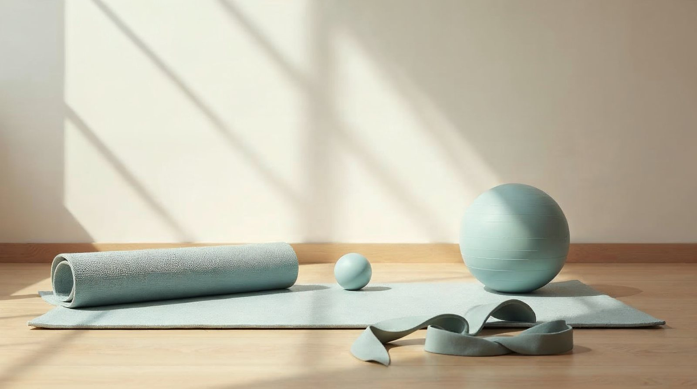
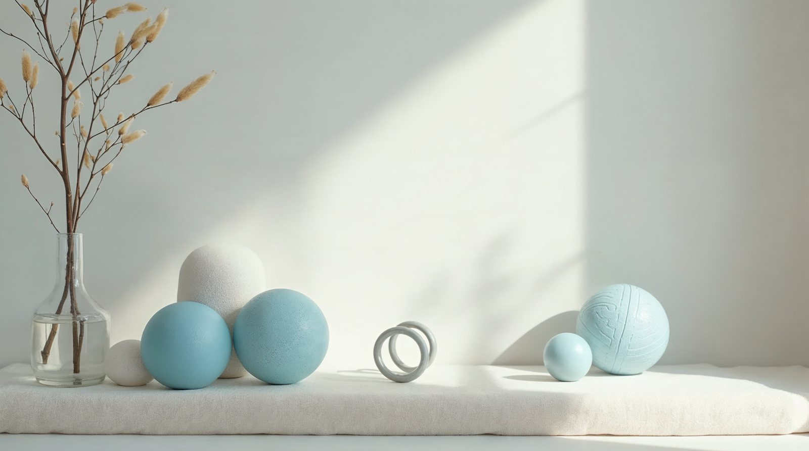
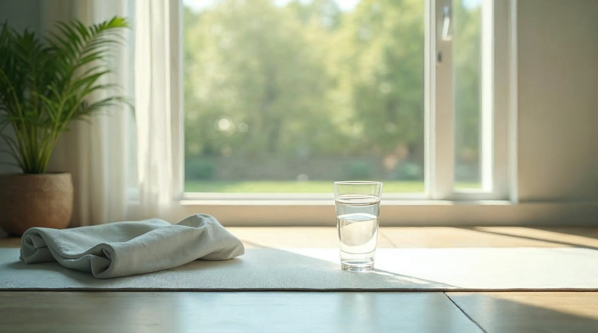
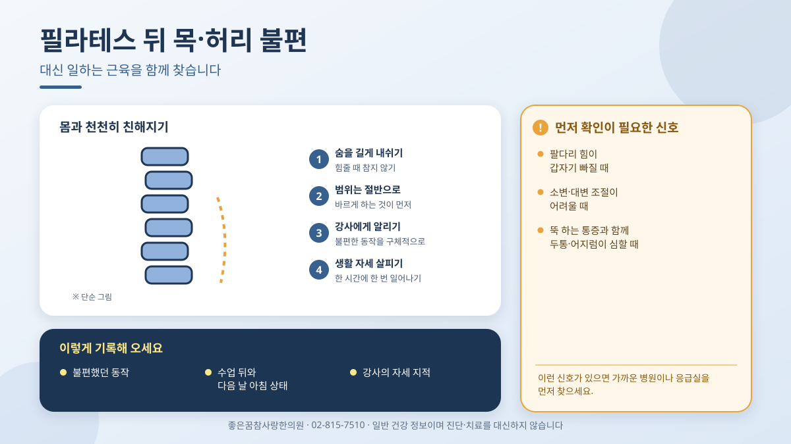

이종호 한의사 감수좋은꿈참사랑한의원 대표원장 (한의사 면허번호 19769)발행 2026-11-26 · 수정 2026-11-26
이 글의 차례
토요일 오전, 기구 필라테스 수업이 끝나고 스튜디오를 나섭니다. 몸을 바르게 세우고 싶어 큰마음 먹고 등록했는데, 수업을 몇 번 듣고 나니 목 뒤가 뻣뻣하게 당기고 허리 아래가 묵직합니다. '운동이 나랑 안 맞는 걸까, 내가 뭘 잘못하고 있는 걸까' 하는 생각이 듭니다.
진료실에서 이런 이야기를 꽤 자주 듣습니다. 필라테스는 몸의 중심을 잡고 자세를 바르게 하는 데 도움이 되는 운동으로 알려져 있어서, 오히려 불편해졌다는 사실에 실망하시는 분이 많습니다. 그 마음을 잘 압니다.
필라테스 자체가 나쁜 운동이라서가 아닙니다. 처음 배우는 동작은 아직 몸이 익숙하지 않아서, 써야 할 근육 대신 늘 쓰던 근육이 대신 일하기 쉽습니다. 오랫동안 목과 어깨, 허리 근육으로 버텨 온 분이라면 새로운 동작에서도 그 근육들이 먼저 나서곤 합니다.
저는 이런 분들께 "어떤 동작을 할 때, 몸의 어디에 힘이 들어가는 느낌이었는지"를 먼저 여쭙니다. 같은 동작이라도 어떻게 하고 계신지에 따라 불편의 이유가 달라지고, 바꿔 볼 부분도 달라지기 때문입니다.

필라테스 뒤 목과 허리 불편은 어떤 모습인가요?
목에서는 뒷목과 어깨 위쪽이 뻣뻣하게 당기는 경우가 가장 많습니다. 누운 자세에서 고개를 들고 배에 힘을 주는 동작, 상체를 말아 올리는 동작을 할 때 배보다 목에 먼저 힘이 들어가면 수업 뒤 뒷목이 묵직해집니다. 머리가 무겁고 띵하다는 분도 있습니다.
허리에서는 허리 아래쪽이 뻐근하거나 양옆이 당기는 경우가 흔합니다. 누워서 두 다리를 들어 올리거나 다리를 길게 뻗는 동작에서 배의 힘이 풀리면 허리가 바닥에서 들리며 꺾이고, 그 부담이 허리 아래로 쌓입니다.
이런 불편은 대개 수업 직후나 다음 날 나타나고, 하루 이틀 지나면 가라앉는 경우가 많습니다. 하지만 수업 때마다 반복되거나, 점점 오래가거나, 일상에서도 불편이 남는다면 동작을 하는 방식을 함께 살펴볼 때입니다.
왜 자세를 바로잡으려고 시작했는데 더 불편할까요
가장 흔한 이유는 쓰던 근육이 계속 일하는 것입니다. 오랫동안 책상 앞에서 어깨를 올리고 목을 내민 채 지내 온 분은, 몸통 깊은 곳의 근육보다 목과 어깨 근육을 먼저 쓰는 습관이 몸에 배어 있습니다. 새 동작을 배워도 처음에는 그 습관대로 움직이게 됩니다.
호흡도 큰 영향을 줍니다. 필라테스는 숨을 내쉬며 몸통에 힘을 모으는 운동인데, 동작에 집중하다 보면 숨을 참게 되는 분이 많습니다. 숨을 참으면 어깨가 올라가고 목이 굳으며, 몸통을 받쳐 주는 힘도 오히려 약해집니다.
처음부터 너무 어려운 단계로 시작하는 것도 이유입니다. 그룹 수업에서는 옆 사람 속도를 따라가려 무리하기 쉽고, 기구의 스프링 무게나 동작 범위가 지금 몸에 비해 클 수 있습니다. 동작을 끝까지 해내려 애쓰다 보면 허리와 목이 그만큼을 대신 메웁니다.
몸이 원래 가진 불편이 드러나는 경우도 있습니다. 예전에 허리를 삐끗한 적이 있거나, 목디스크나 허리디스크 진단을 받으신 분, 출산 뒤 복부 힘이 약해진 분은 같은 동작에서도 더 쉽게 불편을 느낄 수 있습니다. 이런 이야기는 강사에게 미리 알려 두시는 것이 좋습니다.
운동 뒤 근육통과는 어떻게 다른가요
처음 쓰는 근육이 많이 쓰이면 배와 엉덩이, 허벅지 안쪽이 넓게 뻐근한 근육통이 생깁니다. 이것은 새로운 근육을 깨운 신호에 가깝고, 이삼일 사이에 가라앉습니다. 오히려 써야 할 곳을 잘 쓰고 있다는 뜻일 수도 있습니다.
반면 수업 때마다 목 뒤나 허리 아래처럼 같은 자리가 불편하다면, 그 자리가 대신 일하고 있을 가능성이 큽니다. 배를 써야 할 동작에서 목이, 엉덩이를 써야 할 동작에서 허리가 애쓰고 있다는 뜻일 수 있습니다.
팔이나 다리로 저림이 내려가거나, 특정 동작에서 찌릿한 통증이 뻗친다면 단순한 근육 피로로 넘기지 마시고 진찰을 받아 보시길 권합니다. 목이나 허리 안쪽의 신경이 자극을 받고 있는지 먼저 확인하는 것이 좋습니다.
매트 필라테스와 기구 필라테스는 조금 다릅니다
매트 필라테스는 자기 몸무게만으로 동작을 하기 때문에, 누워서 고개와 다리를 드는 동작이 많고 몸통의 힘을 오롯이 스스로 만들어야 합니다. 처음 배우는 분은 목과 허리에 힘이 몰리기 쉬운 편입니다.
기구 필라테스는 스프링이 몸을 도와주기도 하고 저항을 주기도 합니다. 강사가 스프링을 조절해 동작을 쉽게 해 줄 수 있다는 장점이 있지만, 스프링이 지금 몸에 비해 무겁거나 동작 범위가 크면 허리와 목이 그만큼을 대신 메우게 됩니다.
어느 쪽이든 내 몸에 맞는 강도를 찾는 것이 중요합니다. 그룹 수업이 부담스럽다면 처음 몇 번은 개인 수업이나 소수 수업으로 기본 호흡과 자세를 익히고 그룹 수업에 들어가는 방법도 좋습니다.
스스로 먼저 살펴볼 수 있는 것
바닥에 누워 무릎을 세우고, 숨을 내쉬며 고개를 살짝 들어 보세요. 이때 배가 단단해지는지, 목 앞이 먼저 팽팽해지는지 손으로 만져 봅니다. 목에 먼저 힘이 들어간다면 고개를 드는 높이를 낮추거나, 손으로 뒤통수를 받쳐 보세요.
같은 자세에서 한쪽 다리를 천천히 들어 올려 보세요. 허리와 바닥 사이에 손을 넣었을 때 허리가 들리며 틈이 커진다면, 배의 힘보다 허리가 다리 무게를 버티고 있는 것입니다. 다리를 드는 높이나 범위를 줄이면 허리 부담이 덜어집니다.
수업 뒤 언제, 어디가 불편한지도 적어 보세요. 수업 직후 바로 불편한지, 다음 날 아침에 불편한지, 어떤 동작 뒤에 그런지를 모아 보면 바꿔 볼 동작이 보입니다. 수업이 없는 날의 목과 허리 상태도 함께 적어 두면, 운동 때문인지 생활 자세 때문인지 나눠 보기가 한결 쉬워집니다.
먼저 이렇게 여쭙니다
- 필라테스를 시작하신 지 얼마나 되셨고, 일주일에 몇 번 하시나요?
- 매트 수업인가요, 기구 수업인가요? 그룹 수업인가요, 개인 수업인가요?
- 어떤 동작에서 목이나 허리가 불편하신가요?
- 동작 중에 숨을 참는 편이신가요?
- 예전에 목이나 허리 디스크, 삐끗한 일, 출산 경험이 있으신가요?
- 하루에 앉아 있는 시간과 일하는 자세는 어떠신가요?
강사에게서 들은 이야기도 알려 주세요. "어깨가 올라간다", "갈비뼈가 벌어진다", "허리가 뜬다" 같은 지적은 지금 몸이 어떤 방식으로 동작을 버티고 있는지를 알려 주는 좋은 단서가 됩니다.
일상에서 먼저 해 볼 수 있는 것
불편이 생겼다고 필라테스를 그만두실 필요는 없습니다. 동작의 강도와 범위를 줄이고, 호흡과 기본 자세를 다시 익히는 쪽을 먼저 권합니다. 대부분은 몇 주 사이에 몸이 새 동작에 익숙해지며 불편이 줄어듭니다.
- 강사에게 목·허리 불편을 알리고 쉬운 단계로 바꿔 달라고 하기
- 동작 중 숨을 참지 않고, 힘을 줄 때 길게 내쉬기
- 고개를 드는 동작은 높이를 낮추거나 손으로 뒤통수 받치기
- 다리를 드는 동작은 무릎을 굽히거나 범위를 줄이기
- 수업 전 가볍게 걷거나 몸을 데우고 들어가기
- 수업 뒤 목과 허리를 가볍게 늘리고 따뜻하게 샤워하기
동작을 '끝까지 해내는 것'보다 '바르게 하는 것'에 마음을 두시면 좋습니다. 범위를 절반으로 줄이더라도 써야 할 근육을 쓰고 있다면 그것이 훨씬 의미 있는 운동입니다. 옆 사람과 비교하지 않으셔도 됩니다.
평소 생활 자세도 함께 살펴보세요. 일주일에 두세 시간 필라테스를 해도, 나머지 시간 동안 고개를 숙이고 어깨를 올린 채 지낸다면 몸은 그 습관 쪽으로 돌아갑니다. 한 시간에 한 번 일어나 어깨를 내리고 숨을 길게 내쉬는 것만으로도 수업에서 배운 것이 몸에 더 잘 남습니다.
잠자는 자세와 베개 높이도 목에 영향을 줍니다. 수업 다음 날 아침 목이 유난히 뻣뻣하다면 베개가 너무 높거나 낮지 않은지 한번 살펴보세요. 옆으로 누웠을 때 목과 등이 일직선이 되는 높이가 대체로 편안합니다.
출산 뒤나 오랜만에 운동을 시작하는 분이라면
출산 뒤 필라테스를 시작하시는 분이 많습니다. 임신과 출산을 지나며 배 근육이 늘어나고 골반 주변 힘이 약해진 상태라, 같은 동작에서도 허리가 먼저 지치기 쉽습니다. 누워서 고개를 들 때 배 한가운데가 볼록하게 솟는다면 그 동작은 잠시 미루고 강사와 상의해 보세요.
오랫동안 운동을 쉬다 시작하신 분도 처음 몇 주는 몸통 깊은 근육이 깨어나는 데 시간이 걸립니다. 그 사이에는 동작의 개수보다 호흡과 자세를 익히는 데 마음을 두시는 것이 좋습니다. 처음 한 달은 '몸의 사용법을 다시 배우는 기간'이라고 생각해 주세요.
나이가 드신 분은 관절의 움직임 범위가 젊을 때와 다를 수 있습니다. 다른 사람만큼 다리가 올라가지 않거나 몸이 덜 말려도 괜찮습니다. 내 몸이 편안하게 갈 수 있는 범위 안에서 움직이는 것이 필라테스의 본래 뜻에 더 가깝습니다.

강사와는 어떻게 이야기하면 좋을까요
불편한 곳이 있다면 수업 시작 전에 짧게라도 알려 주세요. "누워서 고개 드는 동작에서 뒷목이 당겨요", "다리를 길게 뻗으면 허리가 뜨는 느낌이에요"처럼 구체적으로 말씀하시면 강사가 동작을 바꾸거나 도구를 써서 도와줄 수 있습니다.
수업 도중에도 불편하면 바로 멈추고 말씀하셔도 괜찮습니다. 참고 끝까지 따라가는 것보다 그 자리에서 동작을 조정하는 편이 몸에 훨씬 도움이 됩니다. 한의원 진료를 받고 계신다면 진료에서 들은 이야기를 강사에게 전해 주셔도 좋습니다.
한의원에서 함께 살필 수 있는 경우
- 필라테스 수업 뒤 목이나 허리 불편이 몇 주째 이어지는 경우
- 수업 때마다 같은 자리가 당기고 일상에서도 불편이 남는 경우
- 목과 어깨가 늘 굳어 있어 머리까지 무겁게 느껴지는 경우
- 예전에 다친 허리나 목이 수업 뒤 다시 불편해진 경우
- 출산 뒤 복부 힘이 약해 허리가 쉽게 지치는 경우
좋은꿈참사랑한의원에 오시면 먼저 아래 '먼저 확인이 필요한' 신호가 없는지부터 봅니다. 그다음 맥을 짚고, 목과 어깨, 등과 허리, 골반의 움직임과 굳은 자리를 함께 살핍니다. 필요하다고 판단되면 초음파로 근육 부위를 확인하기도 합니다.
진찰한 내용을 바탕으로 침, 약침, 물리치료, 추나 가운데 지금 상태에 맞는 것을 정합니다. 한약을 상의할 때는 드시는 약을 확인한 뒤 신중히 정하고, 임신 중이거나 임신 가능성이 있다면 먼저 알려 주시면 산부인과와 상의하시도록 안내합니다.
필라테스를 이어 가면서 진료를 함께 받으셔도 됩니다. 진료와 운동이 나란히 갈 수 있도록, 수업에서 어떤 동작을 조심하면 좋을지도 함께 이야기합니다.
이렇게 기록해 오시면 상담이 쉬워집니다
- 수업 날짜, 매트·기구 여부, 수업 시간
- 불편했던 동작과 그때 힘이 들어간 자리
- 수업 직후, 다음 날 아침 목과 허리 상태
- 앉아 있던 시간과 잠든 시각
- 강사에게 들은 자세 지적
"기구 50분, 다리 뻗는 동작에서 허리 뻐근 2점"처럼 거창하지 않아도 됩니다. 몇 번의 수업 기록만 모여도 어떤 동작이 몸에 부담을 주는지 보이기 시작합니다.

몸과 천천히 친해지는 운동
필라테스는 빨리 잘하는 운동이라기보다, 내 몸이 어떻게 움직이는지 천천히 알아 가는 운동입니다. 처음 몇 주의 불편은 몸이 새로운 방식을 배우는 과정일 수 있습니다. 조급해하지 않으셔도 됩니다.
불편이 생겼다는 것은 몸이 지금의 방식을 알려 주는 신호이기도 합니다. 그 신호를 따라 동작을 조금씩 바꿔 가다 보면, 어느 날 목과 허리 대신 배와 엉덩이로 버티고 있는 자신을 발견하시게 될 겁니다.
이번 주에는 동작 중 숨을 길게 내쉬기와 강사에게 불편한 곳 알리기, 이 두 가지만 해 보세요. 다음에 오시면 목과 허리가 어떻게 달라졌는지 함께 살펴보겠습니다.
이런 증상은 먼저 확인이 필요합니다
- 팔이나 다리에 힘이 갑자기 빠지거나 감각이 둔해지고 소변·대변 조절이 어려운 경우
- 동작 중 목이나 허리에 뚝 하는 느낌과 함께 심한 통증이 생기고 두통·어지럼이 심해지는 경우
이런 신호가 있으면 한의원보다 가까운 병원이나 응급실을 먼저 찾으세요.
함께 읽으면 좋은 글
- 거북목과 일자목은 추나로 어떻게 살피나요?
- 허리 디스크 초기 신호와 다리 저림은 어떻게 구분하나요?
- 목에서 팔로 저림이 내려올 때(목디스크 의심)는 어떤 점을 먼저 확인하나요?
- 스트레스를 받으면 뒷목이 당기고 머리가 아픈 긴장성 두통은 어떻게 살피나요?
- 요가를 하다가 허벅지 뒤와 엉덩이가 당기는 것은 어떻게 살피나요?

여쭙는 것
- 필라테스를 시작하신 지 얼마나 되셨고, 일주일에 몇 번 하시나요?
- 매트 수업인가요, 기구 수업인가요? 그룹 수업인가요, 개인 수업인가요?
- 어떤 동작에서 목이나 허리가 불편하신가요?
생활에서 해 볼 것
- 강사에게 목·허리 불편을 알리고 쉬운 단계로 바꿔 달라고 하기
- 동작 중 숨을 참지 않고, 힘을 줄 때 길게 내쉬기
- 고개를 드는 동작은 높이를 낮추거나 손으로 뒤통수 받치기
한의원에서 함께 살필 것
- 필라테스 수업 뒤 목이나 허리 불편이 몇 주째 이어지는 경우
- 수업 때마다 같은 자리가 당기고 일상에서도 불편이 남는 경우
- 목과 어깨가 늘 굳어 있어 머리까지 무겁게 느껴지는 경우
먼저 확인이 필요한 신호
- 팔이나 다리에 힘이 갑자기 빠지거나 감각이 둔해지고 소변·대변 조절이 어려운 경우
- 동작 중 목이나 허리에 뚝 하는 느낌과 함께 심한 통증이 생기고 두통·어지럼이 심해…
한눈에 보는 표
| 구분 | 핵심 |
|---|---|
| 여쭙는 것 | 필라테스를 시작하신 지 얼마나 되셨고, 일주일에 몇 번 하시나요? 매트 수업인가요, 기구 수업인가요? 그룹 수업인가요, 개인 수업인가요? |
| 생활에서 해 볼 것 | 강사에게 목·허리 불편을 알리고 쉬운 단계로 바꿔 달라고 하기 동작 중 숨을 참지 않고, 힘을 줄 때 길게 내쉬기 |
| 한의원에서 함께 살필 것 | 필라테스 수업 뒤 목이나 허리 불편이 몇 주째 이어지는 경우 수업 때마다 같은 자리가 당기고 일상에서도 불편이 남는 경우 |
| 먼저 확인이 필요한 신호 | 팔이나 다리에 힘이 갑자기 빠지거나 감각이 둔해지고 소변·대변 조절이 어려운 경우 동작 중 목이나 허리에 뚝 하는 느낌과 함께 심한 통증이 생기고 두통·어지럼이 심해지는 경우 |
자주 묻는 질문
필라테스를 하면 목이 아픈데 그만둬야 하나요?
대부분은 그만두기보다 동작의 강도와 범위를 줄이고 호흡을 다시 익히는 쪽을 먼저 권합니다. 팔로 저림이 내려가거나 불편이 점점 커진다면 진찰을 먼저 받아 보세요.
디스크가 있는데 필라테스를 해도 되나요?
디스크 상태와 증상에 따라 다릅니다. 처방한 선생님과 먼저 상의하시고, 시작하더라도 강사에게 미리 알린 뒤 쉬운 단계부터 천천히 해 보시길 권합니다.
개인 수업과 그룹 수업 가운데 어느 것이 나을까요?
목이나 허리가 불편한 상태라면 처음 몇 번은 개인 수업이나 소수 수업으로 기본 호흡과 자세를 익히는 것이 도움이 될 수 있습니다. 익숙해진 뒤 그룹 수업으로 옮겨도 됩니다.
필라테스와 한의원 진료를 같이 받아도 되나요?
함께 받으셔도 됩니다. 진료 때 어떤 동작에서 불편한지 말씀해 주시면, 수업에서 조심할 동작과 운동을 이어 가는 방법을 함께 이야기합니다.
좋은꿈참사랑한의원은 재진 때 지난번 이야기부터 이어서 여쭙니다. 진료시간과 예약은 오시는 길에서 확인하세요.
어디서 상담받을 수 있나요?
좋은꿈참사랑한의원은 서울 동작구 만양로2길 2 신성빌딩 3층·5층(서울 동작구 상도동, 7호선 상도역 3번 출구 근처)에 있습니다. 한의사 3명(이종호 대표원장, 조영기 수석진료원장, 정원영 진료원장)이 진료합니다. 진료시간은 평일 09:30~20:00(점심 13:00~14:00), 토·일·공휴일 09:30~15:00이며, 방문 전 전화로 확인을 권합니다. 예약은 네이버 예약, 카카오톡 상담, 전화 02-815-7510로 받습니다.
이 글은 일반적인 건강 정보이며 개인의 진단이나 치료를 대신하지 않습니다. 증상이 있거나 복용 중인 약이 있다면 진료를 통해 확인하세요. 치료 효과는 개인마다 다를 수 있습니다.
작성 기준: 일반적으로 알려져 있는 건강 정보를 참고해 정리했습니다(대표원장 감수). 증상 기록은 1~2주 동안 하루 1회, 비슷한 시간에 적어 오시면 지난 상태와 비교하기 쉽습니다.